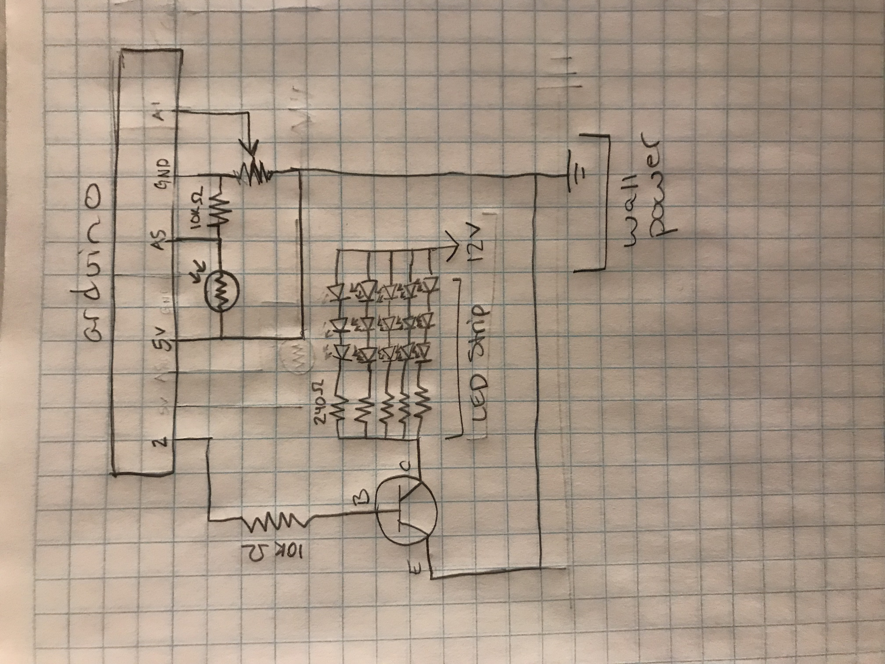
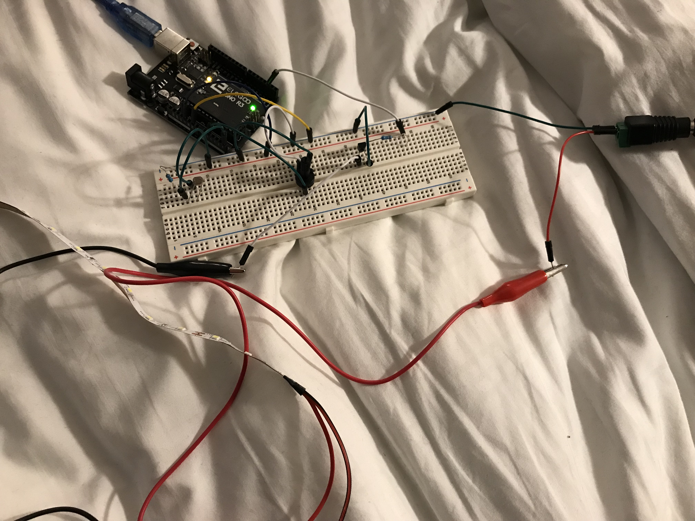

Sam's Assignment 7!
Schematic

This schematic shows the manner in which the 3 parts of this circuit are hooked up to my arduino and power. One part is the LDR which is connected to the
arduino power and ground through a 10K ohm resistor to prevent too much current being drawn from the arduino when the LDR is at a low resistance. Pin A5 is connected between the LDR and the resistor to sense the current flowing through the circuit which indicates changes in the LDR resistance due to changes in light. Another part is the potentiometer which is also connected through arduino power and ground and changes in its state were read by pin A1. The last part is the LED strip which is connected to wall power and controlled using a transistor with output from pin 2. The LED strip is shown in the schematic, however this is not a circuit I built, but one that came surface mounted including reisstors and LEDs. The transistor can provide .6A, but this cicuit only uses about .075A. I know this because the full LED strip uses 18 watts and has 300 LEDs which is .6 watts per LED so for my 15 LEDs they should use about .9 watts. P=VI so .9 watts = 12V (from wall power) * current. .9/12=.075A. I found online that the base resistor should be at least the product of transistor amplification (~150 from data sheet at the volatge I am using) and the voltage coming in from pin 2 (5V) over the load current (.075A see earlier calculation). This allows you to see how much resistance is needed to get the transistor to become fully on and fully off at max and min inputs from pin 2 (10000 Ohms in this case, what I used).
Circuit

I used the breadboard to organize all of the different components of this circuit. The LED strip has plain wires so I had to use aligator clips to connect it to the pins used on everything else.
Arduino Code Snippet
The following code maps the readings from the potentiometer and LDR to RGB values and prints them to the serial monitor as a packet. It also reads from the serial monitor to see if keys were pressed and it that or a potentiometer change is detected it turns on the LED strip.
//name pin 2 "LED_PIN"
#define LED_PIN 2
//initializes a boolean named modding to keep track of key and potentiometer changes
boolean moding;
//initializes an integer named last to keep track of last potentiometer value
int last;
//runs once
void setup() {
//sets pin 2 to be output
pinMode(LED_PIN, OUTPUT);
//sets pin 13 to be output
pinMode(13, OUTPUT);
//starts serial monitor
Serial.begin(9600);
//initializes moding as false
moding = false;
//initializes last as 0
last = 0;
}
//runs repeatedly
void loop() {
//rests moding boolean
moding = false;
//put value read from LDR in integer named photo
int photo = analogRead(A5);
//put value reaf from potentiometer in integer called
int pot = analogRead(A1);
//map value from LDR observed to be between 80 and 800 in our lighting to RGB range of 0 to 255
int photoValue = map(photo, 80, 800, 0, 255);
//map value from potentiometer 0-1023 from datasheet to RGB range of 0-255
int potValue = map(pot, 0, 1023, 0, 255);
//print mapped LDR read in to serial monitor
Serial.print(photoValue);
//print pipe to serial monitor to enable packet parsing
Serial.print("|");
//print mapped potentiometer value to serial monitor
Serial.println(potValue);
//only do this when data is being sent to the arduino through serial (key pressed)
if (Serial.available() > 0){
//read that data
Serial.read();
//set moding boolean to true
moding = true;
}
//set moding to true if it has already been set to true by a key press or the potentiometer value has changed by more than 10
moding = (abs(last-pot) > 10) || moding;
//turns built in LED on if moding is true and off if false for debugging
digitalWrite(13, moding);
//turns LED strip on if moding is true and off if false
digitalWrite(LED_PIN, moding);
//delay to prevent data backup on serial channel
delay(100);
//set last to the latest potentiometer value
last = pot;
}
}
JavaScript Code Snippet
This project uses p5.js to create an interactive webpage that takes the serial output from an LDR and potentiometer on the arduino and direct input from the keyboard all mapped to RGB values that are set to define the background of a webpage.
var serial; // variable to hold an instance of the serialport library
var portName = 'COM4' //rename to the name of your port
var inData; //initializes a variable called inData will be for serial read
var r; //initializes a variable called r will be for red value
var g; //initializes a variable called g will be for green value
var b; //initializes a variabel called b will be for blue value
//runs on creation of page
function setup() {
serial = new p5.SerialPort(); // make a new instance of the serialport library
serial.on('list', printList); // set a callback function for the serialport list event
serial.on('connected', serverConnected); // callback for connecting to the server
serial.on('open', portOpen); // callback for the port opening
serial.on('data', serialEvent); // callback for when new data arrives
serial.on('error', serialError); // callback for errors
serial.on('close', portClose); // callback for the port closing
serial.list(); // list the serial ports
serial.open(portName); // open a serial port
createCanvas(1200, 800); //create area for page
}
// get the list of ports:
function printList(portList) {
// portList is an array of serial port names
for (var i = 0; i < portList.length; i++) {
// Display the list the console:
print(i + " " + portList[i]);
}
}
//function for when server is connected
function serverConnected() {
//print connected status to console for debugging
print('connected to server.');
}
//function for when serial port open
function portOpen() {
//print open status to console for debugging
print('the serial port opened.')
}
//function for when serial throws error
function serialError(err) {
//print error message to console for debugging
print('Something went wrong with the serial port. ' + err);
}
//function for when serial port is colsed
function portClose() {
//print closed message to console for debugging
print('The serial port closed.');
}
//occurs everytime data recieved over serial
function serialEvent() {
//if data is coming over serial
if (serial.available()) {
//set inData to be that data
inData = serial.readLine();
//so long as serial data is not an ampty string
if (inData.length > 0){
//set red to be the first number (LDR)
r = inData.split("|")[0];
//set green to be the second number (potentiometer)
g = inData.split("|")[1];
}
}
}
//occurs when a key is pressed
function keyPressed() {
//makes a variable called num equal to the 0 indexed position of the letter in the alphabet (lowercase letters in ascii start with a=97)
var num = key.charCodeAt(0) - 97;
//maps num to be a value between 0 and 1
var perc = num/25;
//uses that value to map each lowercase letter to a unique evenly spaced value between 0 and 255
b = perc * 255;
//puts b in console for debugging
console.log(b);
//send key pressed back to arduino to allow LED strip display indicating input
serial.write(key);
}
//makes stuff on page
function draw() {
//sets background color based on values from LDR, potentiometer, and keys
background(r, g, b);
//sets test color
fill(255);
//prints the incoming serial monitor data
text("inData: " + inData, 30, 30);
}
Project Operation